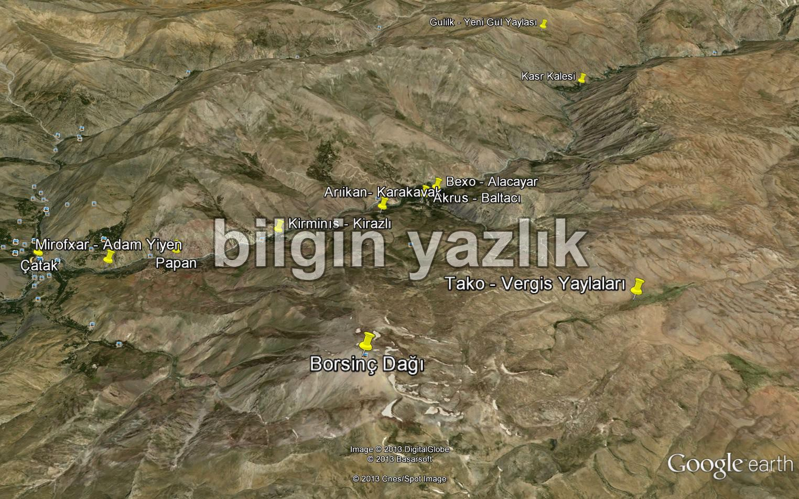
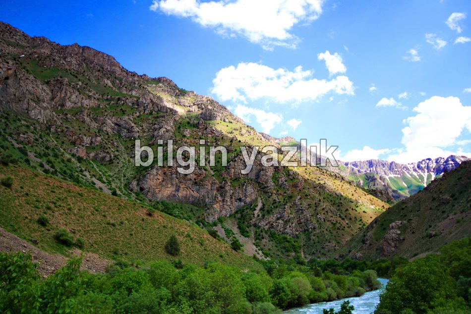
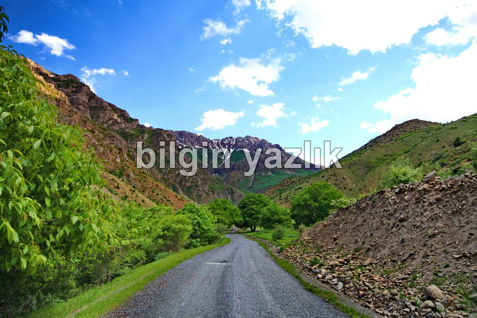
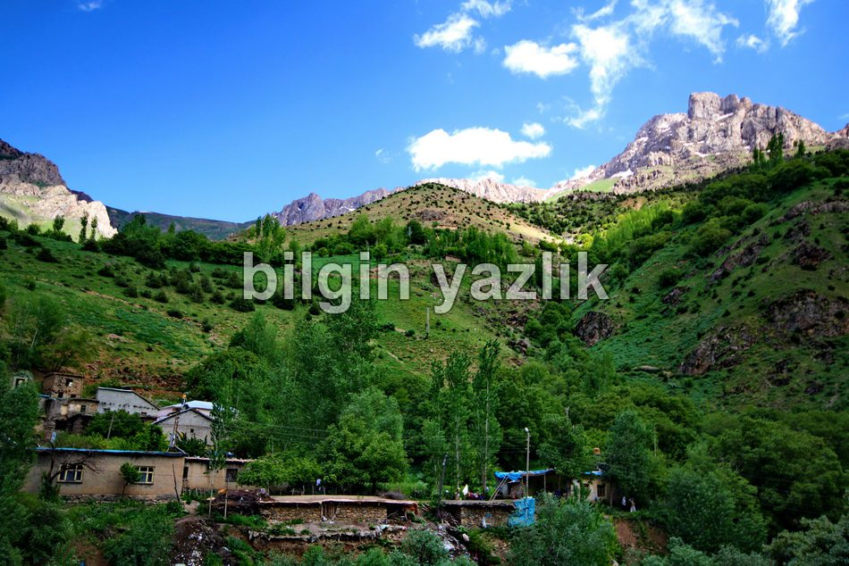
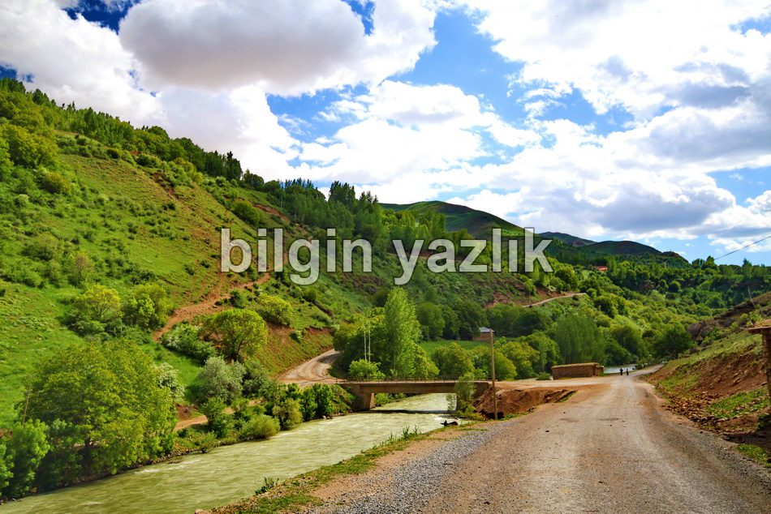
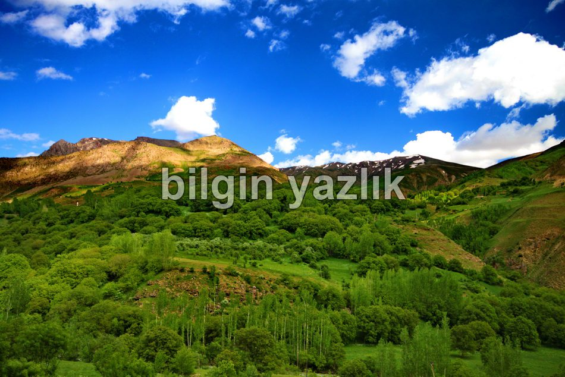
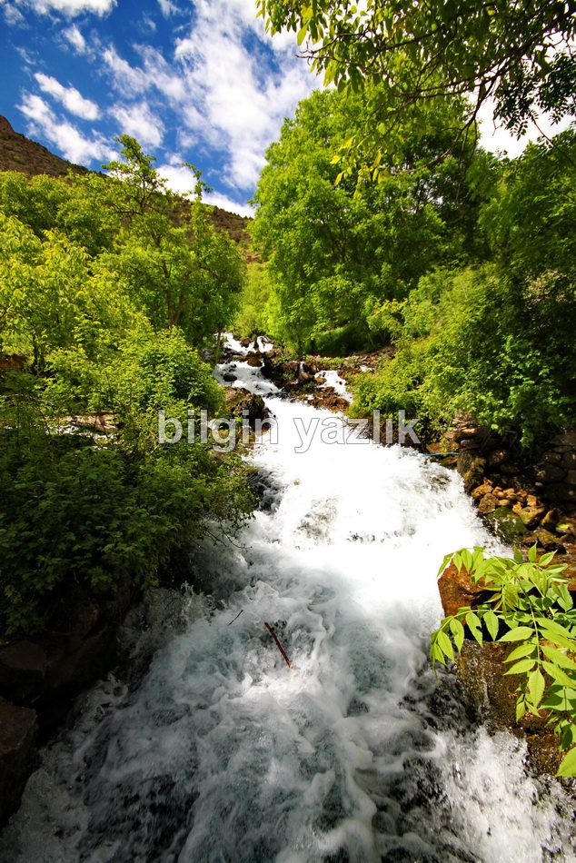
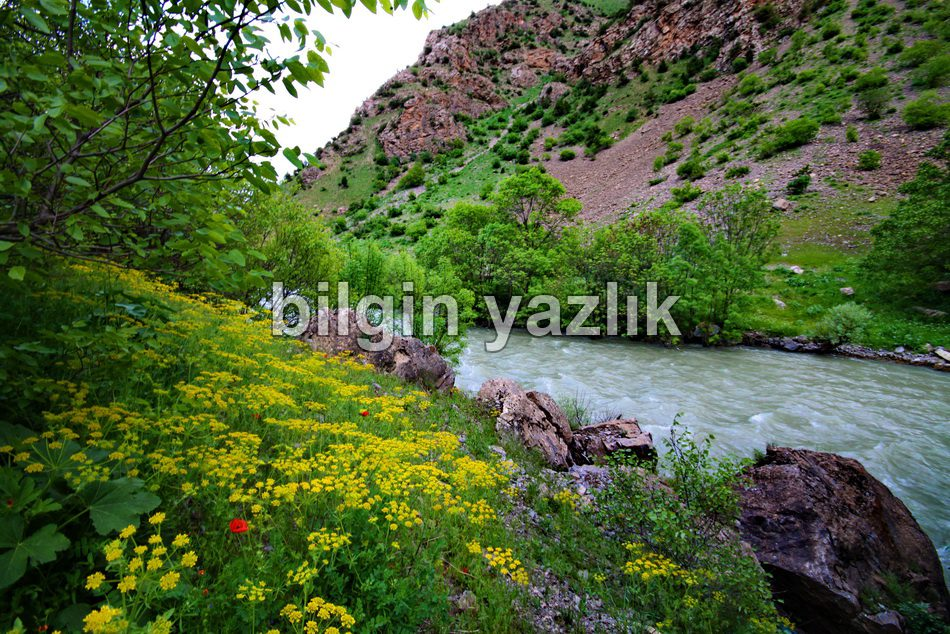
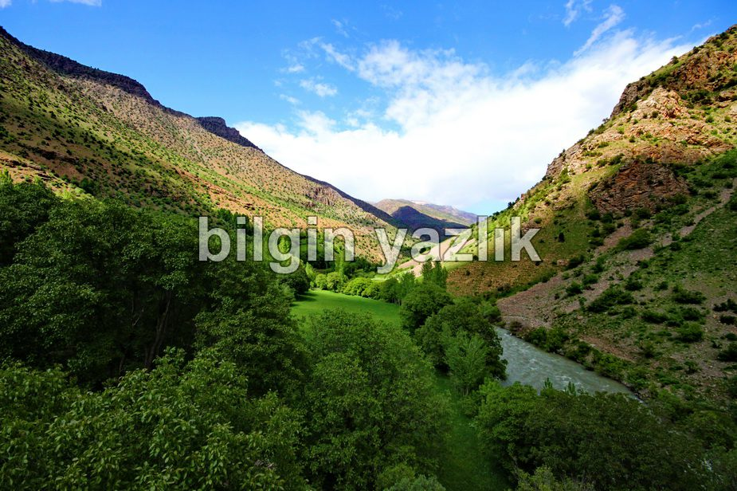
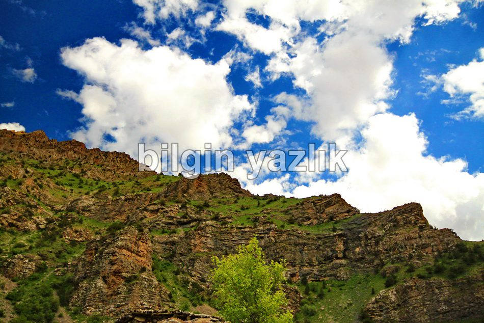

Çatak Norduz Çayı Vadi İçi
Van ili Çatak (Şax) ilçesinin Kuzey Doğu yönünde uzanan bu vadinin tam ortasından Çatak ilçe merkezinin de ortasından geçen Norduz çayı geçmektedir. Norduz çayının coşkun suları ile sulanan bereketli topraklarda uçkun, ceviz, elma, erik, armut, karpuz, kavun, şeftali meyveleri yetişmektedir. Dağlarında ve Norduzda kurt, ayı, domuz, su samuru, alabalık, sazan, tavşan, sincap yaşamaktadır. Vadi içerisinde Alacayar (Bexo) ve Bilgi (Kakan) köyü yer almaktadır. Bu köylere bağlı olarak çok sayıda mezra (akrus, kirminıs, papan, kasrik, baltacı, karakavak, arikan, mırofxar) da yine bu vadi içerisine dağılmış durumdadır.
Kasrik adlı mezra bugün tamamen yıkılmış durumdadır. Burası eskiden Osman Begi aşireti tarafından kale olarak kullanılmıştır. Bugün kale kalıntıları, köy çeşmesi, köy mezarlığı ve ev temelleri hala ayakta durmaktadır. Kale Norduz çayı kenarına, yola hakim bir alana kurulmuştur.
Vadide o kadar çok sayıda ceviz ağacı var ki, her bir mezradan onlarca kamyon ceviz çıkıyormuş. Ağaçların gövde kalınlıkları dikkate alındığında 100’lerce yıllık oldukları görülmektedir. Vadi içerisinde tako, vergis, gulik adlı yaylalar yer almaktadır. Vadinin en yüksek noktası Borsinç dağı zirvesi olarak biliniyor.
Köylerde ve mezralarda kilise izlerine rastlamak mümkün, vakti zamanında çok sayıda Ermeninin bu vadi içerisinde yaşadığı bilinmektedir.
Vadi içerisinde irili ufaklı onlarca tatlı su kaynağı ve şelale yer alıyor. Köylüler bu sularda alabalık yetiştiriyorlar.
Tabiat yürüyüşü yapmak, vahşi hayatı keşfetmek, ceviz yemek, norduz çayında serinlemek için bu vadi bulunmaz bir güzellik.














Bu yazı taliyol arşivinden taşınmıştır. · özgün kayıt